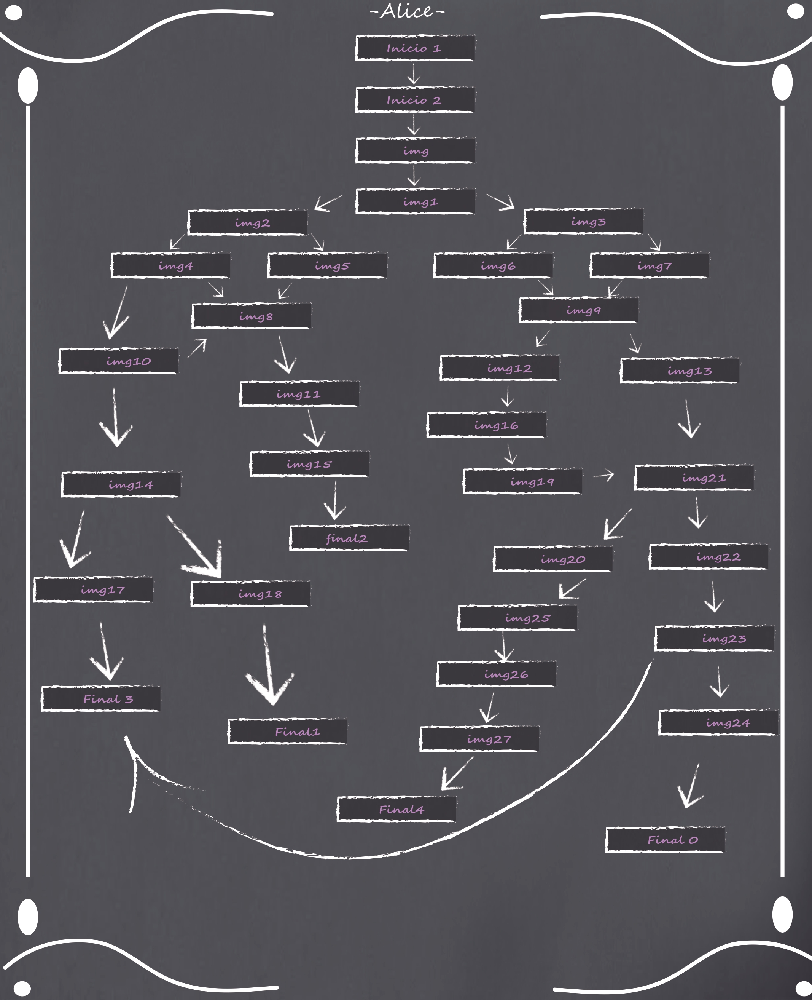

Bienvenido/a a la Aventura gráfica "Alice"
ㅤㅤㅤㅤㅤㅤPresione cualquier tecla
Acerca de Alice:
La aventura gráfica "Alice" es una aventura primeramente hecha(en fines de 2020) en el lenguaje y ambiente processing, con el fin de poner en práctica lo aprendido con JavaScript y CSS en el bootcamp de NodeJS(2022) decidí re-actualizarla a dicho lenguaje(JS).
Añadiendo así; animaciones y elementos adicionales, los cuales no estaban en la versión vieja, y además redefiniendo lógica antigua de la anterior versión mencionada.
Es una aventura gráfica hecha con el unico fin de entretenimiento; la historia es ficticia y no deberia tomarse en serio su historia.
Mapa de la Aventura gráfica
Se recomienda verlo una vez haya terminado la aventura, para una mayor experiencia.
Mapa sobre Alice